第 1 / 13 页

2020全国硕士研究生招生考试
计算机学科专业基础试题参考答案
一、单项选择题
01.
C
02.
D
03.
A
04.
C
05.
B
06.
B
07.
A
08.
B
09.
C
10.
B
11.
A
12.
B
13.
A
14.
D
15.
D
16.
A
17.
B
18.
A
19.
C
20.
C
21.
B
22.
C
23.
B
24.
A
25.
D
26.
D
27.
B
28.
D
29.
B
30.
D
31.
B
32.
C
33.
C
34.
B
35.
C
36.
D
37.
A
38.
D
39.
C
40.
D
0 1 .【解析】
上三角矩阵按列优先存储，先存储仅1 个元素的第一列，再存储有2 个元素的第二列，以
此类推。加7,2位于左下角，对应右上角的元素为加2, 7 , 在加2,7之前存有
第1 列：1
第2 列：2
第6 列：6
第7 列：1
前面共存有1 + 2 + 3 + 4 + 5 + 6 + 1 = 2 2 个元素（数组下标范围为0〜21）, 注意数组下标
从0 开始，故加工7在数组N 中的下标为2 2 , 即加7,2在数组N 中的下标为22。
02. 【解析】
按题意，出入栈操作的过程如下：
操作
栈内元素
出栈元素
Push
a
Push
a b
Pop
a
b
Push
a c
Pop
a
c
Push
a d
Push
a d e
Pop
a d
e
故出栈序列为“ c,e。
03• 【解析】
二叉树采用顺序存储时，用数组下标来表示结点之间的父子关系。对于一棵高度为5 的二
查看 / 复制本页文字
2020全国硕士研究生招生考试 计算机学科专业基础试题参考答案 一、单项选择题 01. C 02. D 03. A 04. C 05. B 06. B 07. A 08. B 09. C 10. B 11. A 12. B 13. A 14. D 15. D 16. A 17. B 18. A 19. C 20. C 21. B 22. C 23. B 24. A 25. D 26. D 27. B 28. D 29. B 30. D 31. B 32. C 33. C 34. B 35. C 36. D 37. A 38. D 39. C 40. D 0 1 .【解析】 上三角矩阵按列优先存储，先存储仅1 个元素的第一列，再存储有2 个元素的第二列，以 此类推。加7,2位于左下角，对应右上角的元素为加2, 7 , 在加2,7之前存有 第1 列：1 第2 列：2 第6 列：6 第7 列：1 前面共存有1 + 2 + 3 + 4 + 5 + 6 + 1 = 2 2 个元素（数组下标范围为0〜21）, 注意数组下标 从0 开始，故加工7在数组N 中的下标为2 2 , 即加7,2在数组N 中的下标为22。 02. 【解析】 按题意，出入栈操作的过程如下： 操作 栈内元素 出栈元素 Push a Push a b Pop a b Push a c Pop a c Push a d Push a d e Pop a d e 故出栈序列为“ c,e。 03• 【解析】 二叉树采用顺序存储时，用数组下标来表示结点之间的父子关系。对于一棵高度为5 的二
第 2 / 13 页
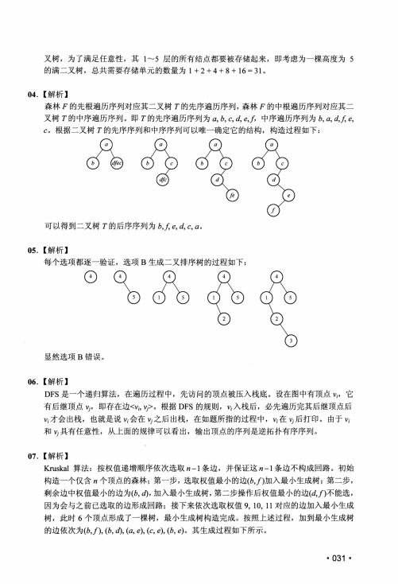
叉树，为了满足任意性，其1〜5 层的所有结点都要被存储起来，即考虑为一棵高度为5
的满二叉树，总共需要存储单元的数量为1 + 2 + 4 + 8 + 16 = 31。
04• 【解析】
森林厂的先根遍历序列对应其二叉树T 的先序遍历序列，森林尸的中根遍历序列对应其二
叉树T 的中序遍历序列。即T 的先序遍历序列为中序遍历序列为6 ,凡&工内
c o 根据二叉树T 的先序序列和中序序列可以唯一确定它的结构，构造过程如下：
可以得到二叉树T 的后序序列为瓦工e, d,c, a.
05. 【解析】
每个选项都逐一验证，选项B 生成二叉排序树的过程如下:
显然选项B 错误。
06. 【解析】
DFS是一个递归算法，在遍历过程中，先访问的顶点被压入栈底。设在图中有顶点匕，它
有后继顶点蚱 即存在边根据DFS的规则，修入栈后，必先遍历完其后继顶点后
片才会出栈，也就是说“会在v/之后出栈，在如题所指的过程中，必在％后打印。由于修
和U具有任意性，从上面的规律可以看出，输出顶点的序列是逆拓扑有序序列。
07. 【解析】
Kruskal算法：按权值递增顺序依次选取勿- 1 条边，并保证这〃- 1 条边不构成回路。初始
构造一个仅含〃个顶点的森林；第一步，选取权值最小的边S J ) 加入最小生成树；第二步,
剩余边中权值最小的边为(瓦加入最小生成树，第二步操作后权值最小的边3 J ) 不能选,
因为会与之前已选取的边形成回路；接下来依次选取权值9, 10, 11对应的边加入最小生成
树，此时6 个顶点形成了一棵树，最小生成树构造完成。按照上述过程，加到最小生成树
的边依次为(6 J ) , 3 , m, (a, e), (c, e), 3 , e)。其生成过程如下所示。
• 031 •
查看 / 复制本页文字
叉树，为了满足任意性，其1〜5 层的所有结点都要被存储起来，即考虑为一棵高度为5 的满二叉树，总共需要存储单元的数量为1 + 2 + 4 + 8 + 16 = 31。 04• 【解析】 森林厂的先根遍历序列对应其二叉树T 的先序遍历序列，森林尸的中根遍历序列对应其二 叉树T 的中序遍历序列。即T 的先序遍历序列为中序遍历序列为6 ,凡&工内 c o 根据二叉树T 的先序序列和中序序列可以唯一确定它的结构，构造过程如下： 可以得到二叉树T 的后序序列为瓦工e, d,c, a. 05. 【解析】 每个选项都逐一验证，选项B 生成二叉排序树的过程如下: 显然选项B 错误。 06. 【解析】 DFS是一个递归算法，在遍历过程中，先访问的顶点被压入栈底。设在图中有顶点匕，它 有后继顶点蚱 即存在边根据DFS的规则，修入栈后，必先遍历完其后继顶点后 片才会出栈，也就是说“会在v/之后出栈，在如题所指的过程中，必在％后打印。由于修 和U具有任意性，从上面的规律可以看出，输出顶点的序列是逆拓扑有序序列。 07. 【解析】 Kruskal算法：按权值递增顺序依次选取勿- 1 条边，并保证这〃- 1 条边不构成回路。初始 构造一个仅含〃个顶点的森林；第一步，选取权值最小的边S J ) 加入最小生成树；第二步, 剩余边中权值最小的边为(瓦加入最小生成树，第二步操作后权值最小的边3 J ) 不能选, 因为会与之前已选取的边形成回路；接下来依次选取权值9, 10, 11对应的边加入最小生成 树，此时6 个顶点形成了一棵树，最小生成树构造完成。按照上述过程，加到最小生成树 的边依次为(6 J ) , 3 , m, (a, e), (c, e), 3 , e)。其生成过程如下所示。 • 031 •
第 3 / 13 页
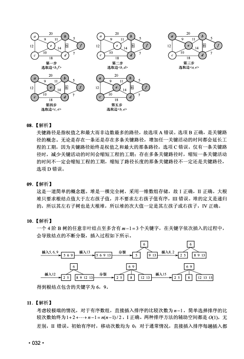
第一步
选砂他/>
第二步
选取边<b,d>
第三步
选取边<a, e>
第四步
选取边<C, e>
第五步
选破〈a e>
08. 【解析】
关键路径是指权值之和最大而非边数最多的路径，故选项A 错误。选项B 正确，是关键路
径的概念。无论是存在一条还是存在多条关键路径，增加任一关键活动的时间都会延长工
程的工期，因为关键路径始终是权值之和最大的那条路径，选项C 错误。仅有一条关键路
径时，减少关键活动的时间会缩短工程的工期；存在多条关键路径时，缩短一条关键活动
的时间不一定会缩短工程的工期，缩短了路径长度的那条关键路径不一定还是关键路径，
选项D 错误。
09• 【解析】
这是一道简单的概念题。堆是一棵完全树，采用一维数组存储，故I 正确，II正确。大根
堆只要求根结点值大于左右孩子值，并不要求左右孩子值有序，i n 错误。堆的定义是递归
的，所以其左右子树也是大根堆，所以堆的次大值一定是其左孩子或右孩子，I V 正确。
10• 【解析】
一个4 阶B 树的任意非叶结点至多含有加-1 = 3 个关键字，在关键字依次插入的过程中,
会导致结点的不断分裂，插入过程如下所示。
得到根结点包含的关键字为6, 9o
1 1 .【解析】
考虑较极端的情况，对于有序数组，直接插入排序的比较次数为〃- 1 , 简单选择排序的比
较次数始终为1 + 2 + …
1 =
1)/2, I 正确。两种排序方法的辅助空间都是0(1),无
差别，II错误。初始有序时，移动次数均为0 ；对于通常情况，直接插入排序每趟插入都
• 032 •
查看 / 复制本页文字
第一步 选砂他/> 第二步 选取边<b,d> 第三步 选取边<a, e> 第四步 选取边<C, e> 第五步 选破〈a e> 08. 【解析】 关键路径是指权值之和最大而非边数最多的路径，故选项A 错误。选项B 正确，是关键路 径的概念。无论是存在一条还是存在多条关键路径，增加任一关键活动的时间都会延长工 程的工期，因为关键路径始终是权值之和最大的那条路径，选项C 错误。仅有一条关键路 径时，减少关键活动的时间会缩短工程的工期；存在多条关键路径时，缩短一条关键活动 的时间不一定会缩短工程的工期，缩短了路径长度的那条关键路径不一定还是关键路径， 选项D 错误。 09• 【解析】 这是一道简单的概念题。堆是一棵完全树，采用一维数组存储，故I 正确，II正确。大根 堆只要求根结点值大于左右孩子值，并不要求左右孩子值有序，i n 错误。堆的定义是递归 的，所以其左右子树也是大根堆，所以堆的次大值一定是其左孩子或右孩子，I V 正确。 10• 【解析】 一个4 阶B 树的任意非叶结点至多含有加-1 = 3 个关键字，在关键字依次插入的过程中, 会导致结点的不断分裂，插入过程如下所示。 得到根结点包含的关键字为6, 9o 1 1 .【解析】 考虑较极端的情况，对于有序数组，直接插入排序的比较次数为〃- 1 , 简单选择排序的比 较次数始终为1 + 2 + … 1 = 1)/2, I 正确。两种排序方法的辅助空间都是0(1),无 差别，II错误。初始有序时，移动次数均为0 ；对于通常情况，直接插入排序每趟插入都 • 032 •
第 4 / 13 页
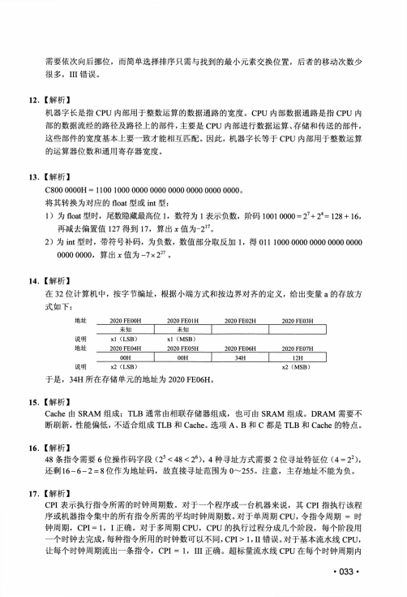
需要依次向后挪位，而简单选择排序只需与找到的最小元素交换位置，后者的移动次数少
很多，i n 错误。
12 . 【解析】
机器字长是指CPU内部用于整数运算的数据通路的宽度。CPU内部数据通路是指CPU内
部的数据流经的路径及路径上的部件，主要是CPU内部进行数据运算、存储和传送的部件,
这些部件的宽度基本上要一致才能相互匹配。因此，机器字长等于CPU内部用于整数运算
的运算器位数和通用寄存器宽度。
13• 【解析】
C800 0000H = 1100 1000 0000 0000 0000 0000 0000 0000 o
将其转换为对应的float型或int型：
1 ) 为float型时，尾数隐藏最高位1 , 数符为1表示负数，阶码1001 0000 = 27+2 4= 128 + 16,
再减去偏置值127得到1 7 , 算出x 值为-2 。
2 ) 为int型时，带符号补码，为负数，数值部分取反加1 , 得011 1000 0000 0000 0000 0000
0000 0 0 0 0 ,算出 X 值为-7x227。
14 . 【解析】
在3 2 位计算机中，按字节编址，根据小端方式和按边界对齐的定义，给出变量a 的存放方
式如下：
地址
_
2020 FE00H
2020 FE01H
2020 FE02H
2020 FE03H
未知
未知
1
1
1
说明
xl (LSB)
xl (MSB)
地址
_
2020 FE04H
2020 FE05H
2020 FE06H
2020 FE07H
00H
OOH
1
34H
1
12H
|
说明
x2 (LSB)
x2 (MSB)
于是，34H所在存储单元的地址为2020 FE06Ho
15 . 【解析】
Cache由SRAM组成；TLB通常由相联存储器组成，也可由SRAM组成。DRAM需要不
断刷新，性能偏低，不适合组成TLB和Cacheo选项A、B 和C 都是TLB和Cache的特点。
16• 【解析】
4 8 条指令需要6 位操作码字段(25 < 4 8 < 2 6), 4 种寻址方式需要2 位寻址特征位(4 = 22),
还剩1 6 - 6 - 2 = 8 位作为地址码，故直接寻址范围为0~ 255。注意，主存地址不能为负。
17. 【解析】
CPI表示执行指令所需的时钟周期数。对于一个程序或一台机器来说，其CPI指执行该程
序或机器指令集中的所有指令所需的平均时钟周期数。对于单周期CPU,令指令周期= 时
钟周期，CPI=1, I 正确。对于多周期CPU, CPU的执行过程分成几个阶段，每个阶段用
一个时钟去完成，每种指令所用的时钟数可以不同，C P I> 1,II错误。对于基本流水线CPU,
让每个时钟周期流出一条指令，CPI = 1, i n 正确。超标量流水线CPU在每个时钟周期内
• 033 -
查看 / 复制本页文字
需要依次向后挪位，而简单选择排序只需与找到的最小元素交换位置，后者的移动次数少 很多，i n 错误。 12 . 【解析】 机器字长是指CPU内部用于整数运算的数据通路的宽度。CPU内部数据通路是指CPU内 部的数据流经的路径及路径上的部件，主要是CPU内部进行数据运算、存储和传送的部件, 这些部件的宽度基本上要一致才能相互匹配。因此，机器字长等于CPU内部用于整数运算 的运算器位数和通用寄存器宽度。 13• 【解析】 C800 0000H = 1100 1000 0000 0000 0000 0000 0000 0000 o 将其转换为对应的float型或int型： 1 ) 为float型时，尾数隐藏最高位1 , 数符为1表示负数，阶码1001 0000 = 27+2 4= 128 + 16, 再减去偏置值127得到1 7 , 算出x 值为-2 。 2 ) 为int型时，带符号补码，为负数，数值部分取反加1 , 得011 1000 0000 0000 0000 0000 0000 0 0 0 0 ,算出 X 值为-7x227。 14 . 【解析】 在3 2 位计算机中，按字节编址，根据小端方式和按边界对齐的定义，给出变量a 的存放方 式如下： 地址 _ 2020 FE00H 2020 FE01H 2020 FE02H 2020 FE03H 未知 未知 1 1 1 说明 xl (LSB) xl (MSB) 地址 _ 2020 FE04H 2020 FE05H 2020 FE06H 2020 FE07H 00H OOH 1 34H 1 12H | 说明 x2 (LSB) x2 (MSB) 于是，34H所在存储单元的地址为2020 FE06Ho 15 . 【解析】 Cache由SRAM组成；TLB通常由相联存储器组成，也可由SRAM组成。DRAM需要不 断刷新，性能偏低，不适合组成TLB和Cacheo选项A、B 和C 都是TLB和Cache的特点。 16• 【解析】 4 8 条指令需要6 位操作码字段(25 < 4 8 < 2 6), 4 种寻址方式需要2 位寻址特征位(4 = 22), 还剩1 6 - 6 - 2 = 8 位作为地址码，故直接寻址范围为0~ 255。注意，主存地址不能为负。 17. 【解析】 CPI表示执行指令所需的时钟周期数。对于一个程序或一台机器来说，其CPI指执行该程 序或机器指令集中的所有指令所需的平均时钟周期数。对于单周期CPU,令指令周期= 时 钟周期，CPI=1, I 正确。对于多周期CPU, CPU的执行过程分成几个阶段，每个阶段用 一个时钟去完成，每种指令所用的时钟数可以不同，C P I> 1,II错误。对于基本流水线CPU, 让每个时钟周期流出一条指令，CPI = 1, i n 正确。超标量流水线CPU在每个时钟周期内 • 033 -
第 5 / 13 页
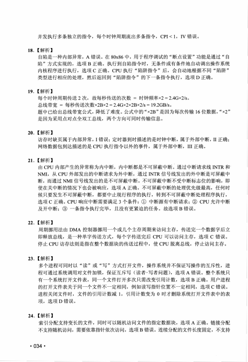
并发执行多条独立的指令，每个时钟周期流出多条指令，C P iv i, IV 错误。
18 . 【解析】
自陷是一种内部异常，A 错误。在80x86中，用于程序调试的“断点设置”功能是通过“自
陷”方式实现的，选项B 正确。执行到自陷指令时，无条件或有条件地自动调出操作系统
内核程序进行执行，选项C 正确。CPU执行“陷阱指令”后，会自动地根据不同“陷阱”
类型进行相应的处理，然后返回到“陷阱指令”的下一条指令执行，选项D 正确。
19 . 【解析】
每个时钟周期传送2 次，故每秒传送的次数= 时钟频率x2 = 2.4Gx2/s。
总线带宽=每秒传送次数x2Bx2 = 2.4Gx2x2Bx2/s=19.2GB/s。
题中已给出总线带宽公式，降低了难度。公式中的“ x2B” 是因为每次传输16位数据，“ x2”
是因为采用点对点全双工总线，两个方向可同时传输信息。
20 . 【解析】
访存时缺页属于内部异常，I 错误；定时器到时描述的是时钟中断，属于外部中断，I I 正确；
网络数据包到达描述的是CPU执行指令以外的事件，属于外部中断，III正确。
21 . 【解析】
由CPU内部产生的异常称为内中断，内中断都是不可屏蔽中断。通过中断请求线INTR和，
N M L 从CPU外部发出的中断请求为外中断，通过INTR信号线发出的外中断是可屏蔽中
断，而通过NMI信号线发出的是不可屏蔽中断。不可屏蔽中断不受中断标志位的影响，即
使在关中断的情况下也会被响应，选项A 正确。不可屏蔽中断的处理优先级最高，任何时
候只要发生不可屏蔽中断，都要中止现行程序的执行，转到不可屏蔽中断处理程序执行，
选项C 正确。CPU响应中断需要满足3 个条件：①中断源有中断请求；②CPU允许中断
及开中断；③一条指令执行完毕，且没有更紧迫的任务。故选项B 错误。
22 . 【解析】
周期挪用法由DMA控制器挪用一个或几个主存周期来访问主存，传送完一个数据字后立
即释放总线，是一种单字传送方式，每个字传送完后CPU可以访问主存，选项C 错误。
停止CPU访存法则是指在整个数据块的传送过程中，使CPU脱离总线，停止访问主存。
23• 【解析】
多个进程可同时以“读”或“写”方式打开文件，操作系统并不保证写操作的互斥性，进
程可通过系统调用对文件加锁，保证互斥写（读者-写者问题），选项A 错误。整个系统只
有一个系统打开文件表，同一个文件打开多次只需改变引用计数，选项B 正确。用户进程
的打开文件表关于同一个文件不一定相同，例如读写指针位置不一定相同，选项C 错误。
进程关闭文件时，文件的引用计数减1 , 引用计数变为0 时才删除系统打开文件表中的表
项，选项D 错误。
24 • 【解析】
索引分配支持变长的文件，同时可以随机访问文件的指定数据块，选项A 正确。链接分配
不支持随机访问，需要依靠指针依次访问，选项B 错误。连续分配的文件长度固定，不支持
• 034 •
查看 / 复制本页文字
并发执行多条独立的指令，每个时钟周期流出多条指令，C P iv i, IV 错误。 18 . 【解析】 自陷是一种内部异常，A 错误。在80x86中，用于程序调试的“断点设置”功能是通过“自 陷”方式实现的，选项B 正确。执行到自陷指令时，无条件或有条件地自动调出操作系统 内核程序进行执行，选项C 正确。CPU执行“陷阱指令”后，会自动地根据不同“陷阱” 类型进行相应的处理，然后返回到“陷阱指令”的下一条指令执行，选项D 正确。 19 . 【解析】 每个时钟周期传送2 次，故每秒传送的次数= 时钟频率x2 = 2.4Gx2/s。 总线带宽=每秒传送次数x2Bx2 = 2.4Gx2x2Bx2/s=19.2GB/s。 题中已给出总线带宽公式，降低了难度。公式中的“ x2B” 是因为每次传输16位数据，“ x2” 是因为采用点对点全双工总线，两个方向可同时传输信息。 20 . 【解析】 访存时缺页属于内部异常，I 错误；定时器到时描述的是时钟中断，属于外部中断，I I 正确； 网络数据包到达描述的是CPU执行指令以外的事件，属于外部中断，III正确。 21 . 【解析】 由CPU内部产生的异常称为内中断，内中断都是不可屏蔽中断。通过中断请求线INTR和， N M L 从CPU外部发出的中断请求为外中断，通过INTR信号线发出的外中断是可屏蔽中 断，而通过NMI信号线发出的是不可屏蔽中断。不可屏蔽中断不受中断标志位的影响，即 使在关中断的情况下也会被响应，选项A 正确。不可屏蔽中断的处理优先级最高，任何时 候只要发生不可屏蔽中断，都要中止现行程序的执行，转到不可屏蔽中断处理程序执行， 选项C 正确。CPU响应中断需要满足3 个条件：①中断源有中断请求；②CPU允许中断 及开中断；③一条指令执行完毕，且没有更紧迫的任务。故选项B 错误。 22 . 【解析】 周期挪用法由DMA控制器挪用一个或几个主存周期来访问主存，传送完一个数据字后立 即释放总线，是一种单字传送方式，每个字传送完后CPU可以访问主存，选项C 错误。 停止CPU访存法则是指在整个数据块的传送过程中，使CPU脱离总线，停止访问主存。 23• 【解析】 多个进程可同时以“读”或“写”方式打开文件，操作系统并不保证写操作的互斥性，进 程可通过系统调用对文件加锁，保证互斥写（读者-写者问题），选项A 错误。整个系统只 有一个系统打开文件表，同一个文件打开多次只需改变引用计数，选项B 正确。用户进程 的打开文件表关于同一个文件不一定相同，例如读写指针位置不一定相同，选项C 错误。 进程关闭文件时，文件的引用计数减1 , 引用计数变为0 时才删除系统打开文件表中的表 项，选项D 错误。 24 • 【解析】 索引分配支持变长的文件，同时可以随机访问文件的指定数据块，选项A 正确。链接分配 不支持随机访问，需要依靠指针依次访问，选项B 错误。连续分配的文件长度固定，不支持 • 034 •
第 6 / 13 页
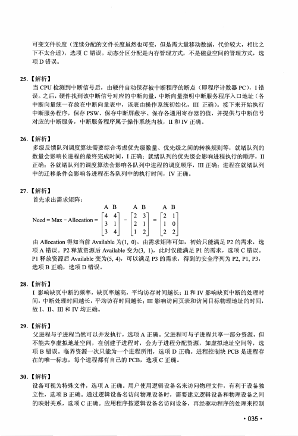
可变文件长度(连续分配的文件长度虽然也可变，但是需大量移动数据，代价较大，相比之
下不太合适)，选项C 错误。动态分区分配是内存管理方式，不是磁盘空间的管理方式，选
项D 错误。
25 . 【解析】
当CPU检测到中断信号后，由硬件自动保存被中断程序的断点(即程序计数器PC), I 错
误。之后，硬件找到该中断信号对应的中断向量，中断向量指明中断服务程序入口地址(各
中断向量统一存放在中断向量表中，该表由操作系统初始化，i n 正确)。接下来开始执行
中断服务程序，保存PSW、保存中断屏蔽字、保存各通用寄存器的值，并提供与中断信号
对应的中断服务，中断服务程序属于操作系统内核，II和IV 正确。
26• 【解析】
多级反馈队列调度算法需要综合考虑优先级数量、优先级之间的转换规则等，就绪队列的
数量会影响长进程的最终完成时间，I 正确；就绪队列的优先级会影响进程执行的顺序，II
正确；各就绪队列的调度算法会影响各队列中进程的调度顺序，m 正确；进程在就绪队列
中的迁移条件会影响各进程在各队列中的执行时间，IV 正确。
27 . 【解析】
首先求出需求矩阵：
A B
A B
A B
4 4
2 3
2
1
Need = Max - Allocation =
3
1
—
2
1
=
1
0
3
4
1
2
2 2
由Allocation得知当前Available为(1, 0)。由需求矩阵可知，初始只能满足P 2 的需求，选
项A 错误。P2释放资源后Available变为(3, 1 ) , 此时仅能满足P 1 的需求，选项C 错误。
P1释放资源后Available变为(5, 4 ) , 可以满足P 3 的需求，得到的安全序列为P2, Pl, P3,
选项B 正确，选项D 错误。
28 . 【解析】
I 影响缺页中断的频率，缺页率越高，平均访存时间越长；II和IV 影响缺页中断的处理时
间，中断处理时间越长，平均访存时间越长；皿影响访问页表和访问目标物理地址的时间，
故I、II、III和IV 均正确。
29 . 【解析】
父进程与子进程当然可以并发执行，选项A 正确。父进程可与子进程共享一部分资源，但
不能共享虚拟地址空间，在创建子进程时，会为子进程分配资源，如虚拟地址空间等，选
项B 错误。临界资源一次只能为一个进程所用，选项D 正确。进程控制块PCB是进程存
在的唯一标志，每个进程都有自己的P C B ,选项C 正确。
30• 【解析】
设备可视为特殊文件，选项A 正确。用户使用逻辑设备名来访问物理文件，有利于设备独
立性，选项B 正确。通过逻辑设备名访问物理设备时，需要建立逻辑设备和物理设备之间
的映射关系，选项C 正确。应用程序按逻辑设备名访问设备，再经驱动程序的处理来控制
• 035 •
查看 / 复制本页文字
可变文件长度(连续分配的文件长度虽然也可变，但是需大量移动数据，代价较大，相比之 下不太合适)，选项C 错误。动态分区分配是内存管理方式，不是磁盘空间的管理方式，选 项D 错误。 25 . 【解析】 当CPU检测到中断信号后，由硬件自动保存被中断程序的断点(即程序计数器PC), I 错 误。之后，硬件找到该中断信号对应的中断向量，中断向量指明中断服务程序入口地址(各 中断向量统一存放在中断向量表中，该表由操作系统初始化，i n 正确)。接下来开始执行 中断服务程序，保存PSW、保存中断屏蔽字、保存各通用寄存器的值，并提供与中断信号 对应的中断服务，中断服务程序属于操作系统内核，II和IV 正确。 26• 【解析】 多级反馈队列调度算法需要综合考虑优先级数量、优先级之间的转换规则等，就绪队列的 数量会影响长进程的最终完成时间，I 正确；就绪队列的优先级会影响进程执行的顺序，II 正确；各就绪队列的调度算法会影响各队列中进程的调度顺序，m 正确；进程在就绪队列 中的迁移条件会影响各进程在各队列中的执行时间，IV 正确。 27 . 【解析】 首先求出需求矩阵： A B A B A B 4 4 2 3 2 1 Need = Max - Allocation = 3 1 — 2 1 = 1 0 3 4 1 2 2 2 由Allocation得知当前Available为(1, 0)。由需求矩阵可知，初始只能满足P 2 的需求，选 项A 错误。P2释放资源后Available变为(3, 1 ) , 此时仅能满足P 1 的需求，选项C 错误。 P1释放资源后Available变为(5, 4 ) , 可以满足P 3 的需求，得到的安全序列为P2, Pl, P3, 选项B 正确，选项D 错误。 28 . 【解析】 I 影响缺页中断的频率，缺页率越高，平均访存时间越长；II和IV 影响缺页中断的处理时 间，中断处理时间越长，平均访存时间越长；皿影响访问页表和访问目标物理地址的时间， 故I、II、III和IV 均正确。 29 . 【解析】 父进程与子进程当然可以并发执行，选项A 正确。父进程可与子进程共享一部分资源，但 不能共享虚拟地址空间，在创建子进程时，会为子进程分配资源，如虚拟地址空间等，选 项B 错误。临界资源一次只能为一个进程所用，选项D 正确。进程控制块PCB是进程存 在的唯一标志，每个进程都有自己的P C B ,选项C 正确。 30• 【解析】 设备可视为特殊文件，选项A 正确。用户使用逻辑设备名来访问物理文件，有利于设备独 立性，选项B 正确。通过逻辑设备名访问物理设备时，需要建立逻辑设备和物理设备之间 的映射关系，选项C 正确。应用程序按逻辑设备名访问设备，再经驱动程序的处理来控制 • 035 •
第 7 / 13 页
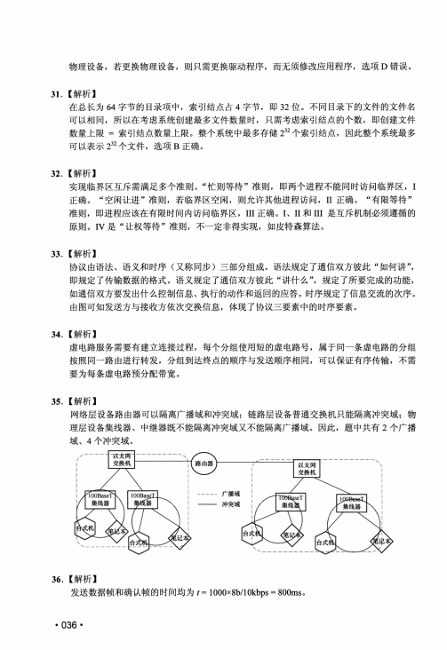
物理设备，若更换物理设备，则只需更换驱动程序，而无须修改应用程序，选项D 错误。
31 . 【解析】
在总长为6 4 字节的目录项中，索引结点占4 字节，即3 2 位。不同目录下的文件的文件名
可以相同，所以在考虑系统创建最多文件数量时，只需考虑索引结点的个数，即创建文件
数量上限= 索引结点数量上限。整个系统中最多存储232个索引结点，因此整个系统最多
可以表示232个文件，选项B 正确。
32 . 【解析】
实现临界区互斥需满足多个准则。“忙则等待”准则，即两个进程不能同时访问临界区，I
正确。“空闲让进”准则，若临界区空闲，则允许其他进程访问，II正确。“有限等待”
准则，即进程应该在有限时间内访问临界区，III正确。I、II和m
是互斥机制必须遵循的
原则。I V 是“让权等待”准则，不一定非得实现，如皮特森算法。
33 • 【解析】
协议由语法、语义和时序（又称同步）三部分组成。语法规定了通信双方彼此“如何讲”，
即规定了传输数据的格式。语义规定了通信双方彼此“讲什么”，规定了所要完成的功能，
如通信双方要发出什么控制信息、执行的动作和返回的应答。时序规定了信息交流的次序。
由图可知发送方与接收方依次交换信息，体现了协议三要素中的时序要素。
34 . 【解析】
虚电路服务需要有建立连接过程，每个分组使用短的虚电路号，属于同一条虚电路的分组
按照同一路由进行转发，分组到达终点的顺序与发送顺序相同，可以保证有序传输，不需
要为每条虚电路预分配带宽。
35 . 【解析】
网络层设备路由器可以隔离广播域和冲突域；链路层设备普通交换机只能隔离冲突域；物
理层设备集线器、中继器既不能隔离冲突域又不能隔离广播域。因此，题中共有2 个广播
域、4 个冲突域。
36 . 【解析】
发送数据帧和确认帧的时间均为t= 1000x8b/10kbps = 800mso
• 036 -
查看 / 复制本页文字
物理设备，若更换物理设备，则只需更换驱动程序，而无须修改应用程序，选项D 错误。 31 . 【解析】 在总长为6 4 字节的目录项中，索引结点占4 字节，即3 2 位。不同目录下的文件的文件名 可以相同，所以在考虑系统创建最多文件数量时，只需考虑索引结点的个数，即创建文件 数量上限= 索引结点数量上限。整个系统中最多存储232个索引结点，因此整个系统最多 可以表示232个文件，选项B 正确。 32 . 【解析】 实现临界区互斥需满足多个准则。“忙则等待”准则，即两个进程不能同时访问临界区，I 正确。“空闲让进”准则，若临界区空闲，则允许其他进程访问，II正确。“有限等待” 准则，即进程应该在有限时间内访问临界区，III正确。I、II和m 是互斥机制必须遵循的 原则。I V 是“让权等待”准则，不一定非得实现，如皮特森算法。 33 • 【解析】 协议由语法、语义和时序（又称同步）三部分组成。语法规定了通信双方彼此“如何讲”， 即规定了传输数据的格式。语义规定了通信双方彼此“讲什么”，规定了所要完成的功能， 如通信双方要发出什么控制信息、执行的动作和返回的应答。时序规定了信息交流的次序。 由图可知发送方与接收方依次交换信息，体现了协议三要素中的时序要素。 34 . 【解析】 虚电路服务需要有建立连接过程，每个分组使用短的虚电路号，属于同一条虚电路的分组 按照同一路由进行转发，分组到达终点的顺序与发送顺序相同，可以保证有序传输，不需 要为每条虚电路预分配带宽。 35 . 【解析】 网络层设备路由器可以隔离广播域和冲突域；链路层设备普通交换机只能隔离冲突域；物 理层设备集线器、中继器既不能隔离冲突域又不能隔离广播域。因此，题中共有2 个广播 域、4 个冲突域。 36 . 【解析】 发送数据帧和确认帧的时间均为t= 1000x8b/10kbps = 800mso • 036 -
第 8 / 13 页
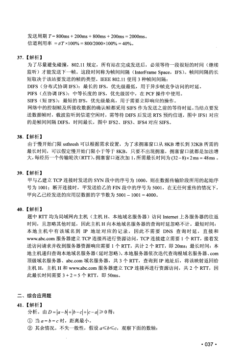
发送周期 T = 800ms + 200ms + 800ms + 200ms = 2000mso
信道利用率= //TxlOO% = 800/2000x100% = 40%。
37. 【解析】
为了尽量避免碰撞，802.11规定，所有站在完成发送后，必须等待一段很短的时间（继续
监听）才能发送下一帧。这段时间称为帧间间隔（InterFrame Space, IFS）。帧间间隔的长
短取决于该站要发送的帧的类型。IEEE 802.11使用3 种帧间间隔：
DIFS （分布式协调IFS）：最长的I F S ,优先级最低，用于异步帧竞争访问的时延。
PIFS （点协调IFS）：中等长度的I F S ,优先级居中，在PCF操作中使用。
SIFS （短IFS）：最短的I F S ,优先级最高，用于需要立即响应的操作。
网络中的控制帧及所接收数据的确认帧都采用SIFS作为发送之前的等待时延。当结点要发
送数据帧时，载波监听到信道空闲时，需等待DIFS后发送RTS预约信道，图中IFS1对应
的是帧间间隔D IF S ,时间最长，图中IFS2、IFS3、IFS4对应SIFS。
38• 【解析】
由于慢开始门限ssthresh可以根据需求设置，为了求拥塞窗口从8KB增长到32KB所需的
最长时间，可以假定慢开始门限小于等于8 K B ,只要不出现拥塞，拥塞窗口就都是加法增
大，每经历一个传输轮次（RTT）, 拥塞窗口逐次加1,所需最长时间为（32-8）x2ms = 48m s。
39. 【解析】
甲与乙建立TCP连接时发送的SYN段中的序号为1000,则在数据传输阶段所用的起始序
号为1001；断开连接时，甲发送给乙的FIN段中的序号为5 0 0 1 ,在无任何重传的情况下，
甲向乙已经发送的应用层数据的字节数为5001- 1001 =4000o
40• 【解析】
题中RTT均为局域网内主机（主机H、本地域名服务器）访问Internet上各服务器的往返
时间，且忽略其他时延，因此主机H 向本地域名服务器的查询时延忽略不计。最短时间：
本地主机中有该域名到I P 地址对应的记录，因此不需要D N S 查询时延，直接和
www.abc.com服务器建立TCP连接再进行资源访问，TCP连接建立需要1 个R T T ,接着发
送访问请求并收到服务器资源响应需要1 个R T T ,共计2 个R T T ,即20ms；最长时间：本
地主机递归查询本地域名服务器（延时忽略），本地服务器依次迭代查询根域名服务器、com
顶级域名服务器、abc.com域名服务器，共3 个R T T ,查询到IP 地址后，将该映射返回给
主机H , 主机H 和www.abc.com服务器建立TCP连接再进行资源访问，共2 个R T T ,因
此最长时间需要3+ 2 = 5 个R T T ,即50ms。
二、综合应用题
41• 【解析】
分析。由0 =卜一回+ |6-°| + |。一4 2 0 得：
①当a = 6 = c 时，距离最小。
② 其余情况。不失一般性，假设观察下面的数轴:
• 037 •
查看 / 复制本页文字
发送周期 T = 800ms + 200ms + 800ms + 200ms = 2000mso 信道利用率= //TxlOO% = 800/2000x100% = 40%。 37. 【解析】 为了尽量避免碰撞，802.11规定，所有站在完成发送后，必须等待一段很短的时间（继续 监听）才能发送下一帧。这段时间称为帧间间隔（InterFrame Space, IFS）。帧间间隔的长 短取决于该站要发送的帧的类型。IEEE 802.11使用3 种帧间间隔： DIFS （分布式协调IFS）：最长的I F S ,优先级最低，用于异步帧竞争访问的时延。 PIFS （点协调IFS）：中等长度的I F S ,优先级居中，在PCF操作中使用。 SIFS （短IFS）：最短的I F S ,优先级最高，用于需要立即响应的操作。 网络中的控制帧及所接收数据的确认帧都采用SIFS作为发送之前的等待时延。当结点要发 送数据帧时，载波监听到信道空闲时，需等待DIFS后发送RTS预约信道，图中IFS1对应 的是帧间间隔D IF S ,时间最长，图中IFS2、IFS3、IFS4对应SIFS。 38• 【解析】 由于慢开始门限ssthresh可以根据需求设置，为了求拥塞窗口从8KB增长到32KB所需的 最长时间，可以假定慢开始门限小于等于8 K B ,只要不出现拥塞，拥塞窗口就都是加法增 大，每经历一个传输轮次（RTT）, 拥塞窗口逐次加1,所需最长时间为（32-8）x2ms = 48m s。 39. 【解析】 甲与乙建立TCP连接时发送的SYN段中的序号为1000,则在数据传输阶段所用的起始序 号为1001；断开连接时，甲发送给乙的FIN段中的序号为5 0 0 1 ,在无任何重传的情况下， 甲向乙已经发送的应用层数据的字节数为5001- 1001 =4000o 40• 【解析】 题中RTT均为局域网内主机（主机H、本地域名服务器）访问Internet上各服务器的往返 时间，且忽略其他时延，因此主机H 向本地域名服务器的查询时延忽略不计。最短时间： 本地主机中有该域名到I P 地址对应的记录，因此不需要D N S 查询时延，直接和 www.abc.com服务器建立TCP连接再进行资源访问，TCP连接建立需要1 个R T T ,接着发 送访问请求并收到服务器资源响应需要1 个R T T ,共计2 个R T T ,即20ms；最长时间：本 地主机递归查询本地域名服务器（延时忽略），本地服务器依次迭代查询根域名服务器、com 顶级域名服务器、abc.com域名服务器，共3 个R T T ,查询到IP 地址后，将该映射返回给 主机H , 主机H 和www.abc.com服务器建立TCP连接再进行资源访问，共2 个R T T ,因 此最长时间需要3+ 2 = 5 个R T T ,即50ms。 二、综合应用题 41• 【解析】 分析。由0 =卜一回+ |6-°| + |。一4 2 0 得： ①当a = 6 = c 时，距离最小。 ② 其余情况。不失一般性，假设观察下面的数轴: • 037 •
第 9 / 13 页
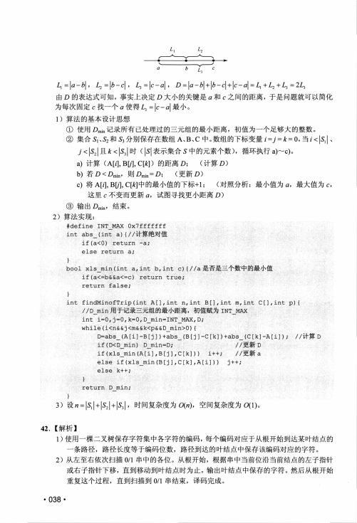
L\
L?
a
b
L3
c
Lx = |df — Z)| , L2 = |Z? — c| , Z3 = |c — a| , Z) = |<7 — Z)| + — c| + |c — a| = Zt + Z2 + £3 = 2L3
由。的表达式可知，事实上决定。大小的关键是々和。之间的距离，于是问题就可以简化
为每次固定c 找一个a 使得4 =卜-司最小。
1 ) 算法的基本设计思想
①使用。min记录所有已处理过的三元组的最小距离，初值为一个足够大的整数。
②集合Si、S?和区分别保存在数组A、B、C 中。数组的下标变量％ =/ = k = 0 ,当》<|引、
/<圆|且左〈冈时(同表示集合S 中的元素个数)，循环执行a)〜c)。
a ) 计算(A[4,B[/],C因)的距离。；
(计算Q)
b ) 若。VOmin，贝 ljQmin=。；
(更新。)
c ) 将A[4,B[/],C因中的最小值的下标+1；
(对照分析：最小值为4 , 最大值为C,
这里。不变而更新试图寻找更小距离。)
③输出。min，结束。
2 ) 算法实现：
#define INT_MAX 0x7fffffff
int abs_(int a) {〃计算绝对值
if(a<0) return -a;
else return a;
)
bool xls_min (int a, int b, int c) { 〃a 是否是三个数中的最小值
if(a<-b&&a<=c) return true;
return false;
)
int findMinofTrip(int A [],int n,int B [],int m,int C []z int p){
//D_min用于记录三元组的最小距离，初值赋为工NT_MAX
int i-0r j=0,k=0,D_min=INT_MAX,D;
while(i<n&&j<m&&k<p&&D_min>0){
D-abs_(A[i]-B[j] )+abs_(B[j]-C[k] )+abs__(C[k]-A[i]); 〃计算 D
if (D<D_min) D_min=D;
//更新 D
if (xls_min(A[i] ,B[j] ,C[k] ) )
i++;
〃更新 a
else if(xls_min(B[j]zC[k],A[i]))
j++;
else k++;
}
return D_min;
)
一
3 ) 设〃 = | 引+ 冈+ 图，时间复杂度为。(叫 空间复杂度为0(1)。
42. 【解析】
1 )使用一棵二叉树保存字符集中各字符的编码，每个编码对应于从根开始到达某叶结点的
一条路径，路径长度等于编码位数，路径到达的叶结点中保存该编码对应的字符。
2 ) 从左至右依次扫描0/1串中的各位。从根开始，根据串中当前位沿当前结点的左子指针
或右子指针下移，直到移动到叶结点时为止。输出叶结点中保存的字符。然后从根开始
重复这个过程，直到扫描到0/1串结束，译码完成。
• 038 •
查看 / 复制本页文字
L\
L?
a
b
L3
c
Lx = |df — Z)| , L2 = |Z? — c| , Z3 = |c — a| , Z) = |<7 — Z)| + — c| + |c — a| = Zt + Z2 + £3 = 2L3
由。的表达式可知，事实上决定。大小的关键是々和。之间的距离，于是问题就可以简化
为每次固定c 找一个a 使得4 =卜-司最小。
1 ) 算法的基本设计思想
①使用。min记录所有已处理过的三元组的最小距离，初值为一个足够大的整数。
②集合Si、S?和区分别保存在数组A、B、C 中。数组的下标变量％ =/ = k = 0 ,当》<|引、
/<圆|且左〈冈时(同表示集合S 中的元素个数)，循环执行a)〜c)。
a ) 计算(A[4,B[/],C因)的距离。；
(计算Q)
b ) 若。VOmin，贝 ljQmin=。；
(更新。)
c ) 将A[4,B[/],C因中的最小值的下标+1；
(对照分析：最小值为4 , 最大值为C,
这里。不变而更新试图寻找更小距离。)
③输出。min，结束。
2 ) 算法实现：
#define INT_MAX 0x7fffffff
int abs_(int a) {〃计算绝对值
if(a<0) return -a;
else return a;
)
bool xls_min (int a, int b, int c) { 〃a 是否是三个数中的最小值
if(a<-b&&a<=c) return true;
return false;
)
int findMinofTrip(int A [],int n,int B [],int m,int C []z int p){
//D_min用于记录三元组的最小距离，初值赋为工NT_MAX
int i-0r j=0,k=0,D_min=INT_MAX,D;
while(i<n&&j<m&&k<p&&D_min>0){
D-abs_(A[i]-B[j] )+abs_(B[j]-C[k] )+abs__(C[k]-A[i]); 〃计算 D
if (D<D_min) D_min=D;
//更新 D
if (xls_min(A[i] ,B[j] ,C[k] ) )
i++;
〃更新 a
else if(xls_min(B[j]zC[k],A[i]))
j++;
else k++;
}
return D_min;
)
一
3 ) 设〃 = | 引+ 冈+ 图，时间复杂度为。(叫 空间复杂度为0(1)。
42. 【解析】
1 )使用一棵二叉树保存字符集中各字符的编码，每个编码对应于从根开始到达某叶结点的
一条路径，路径长度等于编码位数，路径到达的叶结点中保存该编码对应的字符。
2 ) 从左至右依次扫描0/1串中的各位。从根开始，根据串中当前位沿当前结点的左子指针
或右子指针下移，直到移动到叶结点时为止。输出叶结点中保存的字符。然后从根开始
重复这个过程，直到扫描到0/1串结束，译码完成。
• 038 •
第 10 / 13 页
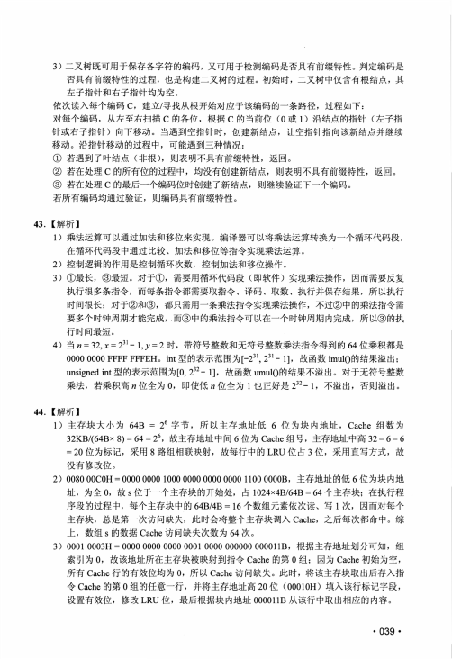
3）二叉树既可用于保存各字符的编码，又可用于检测编码是否具有前缀特性。判定编码是
否具有前缀特性的过程，也是构建二叉树的过程。初始时，二叉树中仅含有根结点，其
左子指针和右子指针均为空。
依次读入每个编码C , 建立/寻找从根开始对应于该编码的一条路径，过程如下：
对每个编码，从左至右扫描C 的各位，根据C 的当前位（0 或1）沿结点的指针（左子指
针或右子指针）向下移动。当遇到空指针时，创建新结点，让空指针指向该新结点并继续
移动。沿指针移动的过程中，可能遇到三种情况：
① 若遇到了叶结点（非根），则表明不具有前缀特性，返回。
②若在处理C 的所有位的过程中，均没有创建新结点，则表明不具有前缀特性，返回。
③若在处理C 的最后一个编码位时创建了新结点，则继续验证下一个编码。
若所有编码均通过验证，则编码具有前缀特性。
43 . 【解析】
1）乘法运算可以通过加法和移位来实现。编译器可以将乘法运算转换为一个循环代码段，
在循环代码段中通过比较、加法和移位等指令实现乘法运算。
2）控制逻辑的作用是控制循环次数，控制加法和移位操作。
3）①最长，③最短。对于①，需要用循环代码段（即软件）实现乘法操作，因而需要反复
执行很多条指令，而每条指令都需要取指令、译码、取数、执行并保存结果，所以执行
时间很长；对于②和③，都只需用一条乘法指令实现乘法操作，不过②中的乘法指令需
要多个时钟周期才能完成，.而③中的乘法指令可以在一个时钟周期内完成，所以③的执
行时间最短。
4）当管= 32,x = 2 3 i - l j = 2 时，带符号整数和无符号整数乘法指令得到的64位乘积都是
0000 0000 FFFF FFFEHo int型的表示范围为2?1- 1 ] , 故函数imul（）的结果溢出；
unsigned int型的表示范围为[0, 2 g - 1 ] , 故函数umul（）的结果不溢出。对于无符号整数
乘法，若乘积高〃位全为0 , 即使低〃位全为1 也正好是232- 1 , 不溢出，否则溢出。
44 . 【解析】
1）主存块大小为64B = 26字节，所以主存地址低6 位为块内地址，C ache组数为
32KB/（64Bx 8） = 64 = 26, 故主存地址中间6 位为Cache组号，主存地址中高3 2 - 6 - 6
= 2 0 位为标记，采用8 路组相联映射，故每行中的LRU位占3 位，采用直写方式，故
没有修改位。
2） 0080 00C0H = 0000 0000 1000 0000 0000 0000 1100 0000B ,主存地址的低 6 位为块内地
址，为全0 , 故s 位于一个主存块的开始处，占1024x4B/64B = 64个主存块；在执行程
序段的过程中，每个主存块中的64B/4B=16个数组元素依次读、写1 次，因而对每个
主存块，总是第一次访问缺失，此时会将整个主存块调入C ache,之后每次都命中。综
上，数组s 的数据Cache访问缺失次数为64 次。
3） 0001 0003H = 0000 0000 0000 0001 0000 000000 000011B,根据主存地址划分可知，组
索引为0 , 故该地址所在主存块被映射到指令Cache的第0 组；因为Cache初始为空，
所有Cache行的有效位均为0 , 所以Cache访问缺失。此时，将该主存块取出后存入指
令Cache的第0 组的任意一行，并将主存地址高20位（00010H）填入该行标记字段，
设置有效位，修改LRU位，最后根据块内地址000011B从该行中取出相应的内容。
• 039 ・
查看 / 复制本页文字
3）二叉树既可用于保存各字符的编码，又可用于检测编码是否具有前缀特性。判定编码是 否具有前缀特性的过程，也是构建二叉树的过程。初始时，二叉树中仅含有根结点，其 左子指针和右子指针均为空。 依次读入每个编码C , 建立/寻找从根开始对应于该编码的一条路径，过程如下： 对每个编码，从左至右扫描C 的各位，根据C 的当前位（0 或1）沿结点的指针（左子指 针或右子指针）向下移动。当遇到空指针时，创建新结点，让空指针指向该新结点并继续 移动。沿指针移动的过程中，可能遇到三种情况： ① 若遇到了叶结点（非根），则表明不具有前缀特性，返回。 ②若在处理C 的所有位的过程中，均没有创建新结点，则表明不具有前缀特性，返回。 ③若在处理C 的最后一个编码位时创建了新结点，则继续验证下一个编码。 若所有编码均通过验证，则编码具有前缀特性。 43 . 【解析】 1）乘法运算可以通过加法和移位来实现。编译器可以将乘法运算转换为一个循环代码段， 在循环代码段中通过比较、加法和移位等指令实现乘法运算。 2）控制逻辑的作用是控制循环次数，控制加法和移位操作。 3）①最长，③最短。对于①，需要用循环代码段（即软件）实现乘法操作，因而需要反复 执行很多条指令，而每条指令都需要取指令、译码、取数、执行并保存结果，所以执行 时间很长；对于②和③，都只需用一条乘法指令实现乘法操作，不过②中的乘法指令需 要多个时钟周期才能完成，.而③中的乘法指令可以在一个时钟周期内完成，所以③的执 行时间最短。 4）当管= 32,x = 2 3 i - l j = 2 时，带符号整数和无符号整数乘法指令得到的64位乘积都是 0000 0000 FFFF FFFEHo int型的表示范围为2?1- 1 ] , 故函数imul（）的结果溢出； unsigned int型的表示范围为[0, 2 g - 1 ] , 故函数umul（）的结果不溢出。对于无符号整数 乘法，若乘积高〃位全为0 , 即使低〃位全为1 也正好是232- 1 , 不溢出，否则溢出。 44 . 【解析】 1）主存块大小为64B = 26字节，所以主存地址低6 位为块内地址，C ache组数为 32KB/（64Bx 8） = 64 = 26, 故主存地址中间6 位为Cache组号，主存地址中高3 2 - 6 - 6 = 2 0 位为标记，采用8 路组相联映射，故每行中的LRU位占3 位，采用直写方式，故 没有修改位。 2） 0080 00C0H = 0000 0000 1000 0000 0000 0000 1100 0000B ,主存地址的低 6 位为块内地 址，为全0 , 故s 位于一个主存块的开始处，占1024x4B/64B = 64个主存块；在执行程 序段的过程中，每个主存块中的64B/4B=16个数组元素依次读、写1 次，因而对每个 主存块，总是第一次访问缺失，此时会将整个主存块调入C ache,之后每次都命中。综 上，数组s 的数据Cache访问缺失次数为64 次。 3） 0001 0003H = 0000 0000 0000 0001 0000 000000 000011B,根据主存地址划分可知，组 索引为0 , 故该地址所在主存块被映射到指令Cache的第0 组；因为Cache初始为空， 所有Cache行的有效位均为0 , 所以Cache访问缺失。此时，将该主存块取出后存入指 令Cache的第0 组的任意一行，并将主存地址高20位（00010H）填入该行标记字段， 设置有效位，修改LRU位，最后根据块内地址000011B从该行中取出相应的内容。 • 039 ・
第 11 / 13 页
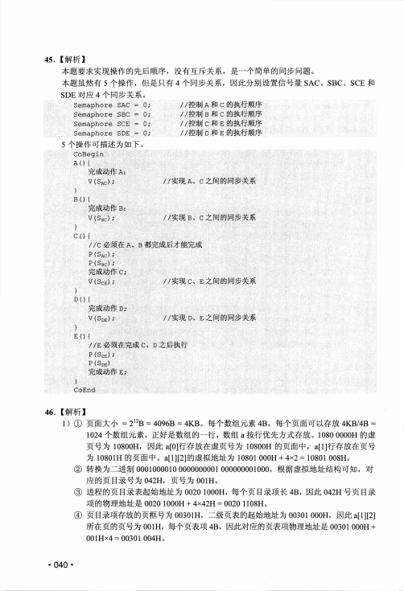
45. 【解析】
本题要求实现操作的先后顺序，没有互斥关系，是一个简单的同步问题。
本题虽然有5 个操作，但是只有4 个同步关系，因此分别设置信号量SAC、SBC、SCE和
SDE对应4 个同步关系。
Semaphore
SAC =
0;
//控制A 和C 的执行顺序
Semaphore
SBC =
0;
//控制B 和C 的执行顺序
Semaphore
SCE =
0;
//控制C 和E 的执行顺序
Semaphore
SDE =
0;
//控制D 和E 的执行顺序
5 个操作可描述为如下。
CoBegin
A() (
完成动作A ；
V (SA C ) ;
//实现A 、C 之间的同步关系
}
B() (
完成动作B;
V (SB C) ;
//实现B 、C 之间的同步关系
)
C O {
/ / C 必须在A 、B 都完成后才能完成
P ( S A C ) ；
P ( S B C) ；
完成动作C;
V (SC E ) ;
//实现C 、E 之间的同步关系
)
D() (
完成动作D；
V(S D E) ;
//实现D、E 之间的同步关系
}
E 0 (
/ / E 必须在完成C 、D 之后执行
P ( S C E ) ；
P ( S D E)
完成动作E;
)
CoEnd
46• 【解析】
1 ) ① 页面大小= 212B = 4096B = 4K B o每个数组元素4 B ,每个页面可以存放4KB/4B =
1024个数组元素，正好是数组的一行，数组a 按行优先方式存放。1080 0000H的虚
页号为10800H ,因此a[0]行存放在虚页号为10800H的页面中，a[l]行存放在页号
为10801H的页面中。a[l]⑵的虚拟地址为10801 000H + 4x2 = 10801 008H。
② 转换为二进制0001000010 0000000001 000000001000，根据虚拟地址结构可知，对
应的页目录号为0 4 2 H ,页号为001H。
③ 进程的页目录表起始地址为0020 1000H,每个页目录项长4 B ,因此042H号页目录
项的物理地址是 0020 1000H + 4x42H = 0020 1108H。
④页目录项存放的页框号为00301H,二级页表的起始地址为00301 0 0 0 H ,因此
所在页的页号为001H ,每个页表项4 B ,因此对应的页表项物理地址是00301 000H +
001Hx4 = 00301 004Ho
• 040 ・
查看 / 复制本页文字
45. 【解析】
本题要求实现操作的先后顺序，没有互斥关系，是一个简单的同步问题。
本题虽然有5 个操作，但是只有4 个同步关系，因此分别设置信号量SAC、SBC、SCE和
SDE对应4 个同步关系。
Semaphore
SAC =
0;
//控制A 和C 的执行顺序
Semaphore
SBC =
0;
//控制B 和C 的执行顺序
Semaphore
SCE =
0;
//控制C 和E 的执行顺序
Semaphore
SDE =
0;
//控制D 和E 的执行顺序
5 个操作可描述为如下。
CoBegin
A() (
完成动作A ；
V (SA C ) ;
//实现A 、C 之间的同步关系
}
B() (
完成动作B;
V (SB C) ;
//实现B 、C 之间的同步关系
)
C O {
/ / C 必须在A 、B 都完成后才能完成
P ( S A C ) ；
P ( S B C) ；
完成动作C;
V (SC E ) ;
//实现C 、E 之间的同步关系
)
D() (
完成动作D；
V(S D E) ;
//实现D、E 之间的同步关系
}
E 0 (
/ / E 必须在完成C 、D 之后执行
P ( S C E ) ；
P ( S D E)
完成动作E;
)
CoEnd
46• 【解析】
1 ) ① 页面大小= 212B = 4096B = 4K B o每个数组元素4 B ,每个页面可以存放4KB/4B =
1024个数组元素，正好是数组的一行，数组a 按行优先方式存放。1080 0000H的虚
页号为10800H ,因此a[0]行存放在虚页号为10800H的页面中，a[l]行存放在页号
为10801H的页面中。a[l]⑵的虚拟地址为10801 000H + 4x2 = 10801 008H。
② 转换为二进制0001000010 0000000001 000000001000，根据虚拟地址结构可知，对
应的页目录号为0 4 2 H ,页号为001H。
③ 进程的页目录表起始地址为0020 1000H,每个页目录项长4 B ,因此042H号页目录
项的物理地址是 0020 1000H + 4x42H = 0020 1108H。
④页目录项存放的页框号为00301H,二级页表的起始地址为00301 0 0 0 H ,因此
所在页的页号为001H ,每个页表项4 B ,因此对应的页表项物理地址是00301 000H +
001Hx4 = 00301 004Ho
• 040 ・
第 12 / 13 页
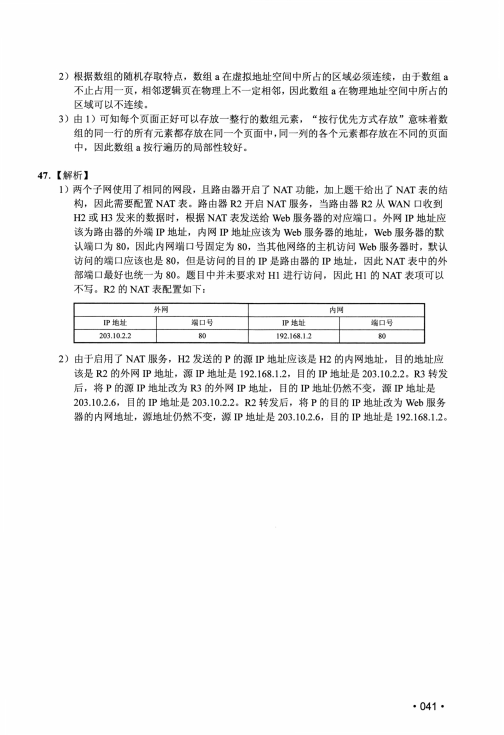
2 ）根据数组的随机存取特点，数组a 在虚拟地址空间中所占的区域必须连续，由于数组a
不止占用一页，相邻逻辑页在物理上不一定相邻，因此数组a 在物理地址空间中所占的
区域可以不连续。
3）由1）可知每个页面正好可以存放一整行的数组元素，“按行优先方式存放”意味着数
组的同一行的所有元素都存放在同一个页面中，同一列的各个元素都存放在不同的页面
中，因此数组a 按行遍历的局部性较好。
47. 【解析】
1）两个子网使用了相同的网段，且路由器开启了 NAT功能，加上题干给出了 NAT表的结
构，因此需要配置NAT表。路由器R 2 开启NAT服务，当路由器R 2从WAN 口收到
H 2或H 3 发来的数据时，根据NAT表发送给Web服务器的对应端口。外网IP 地址应
该为路由器的外端IP 地址，内网IP 地址应该为Web服务器的地址，W eb服务器的默
认端口为8 0 , 因此内网端口号固定为8 0 , 当其他网络的主机访问Web服务器时，默认
访问的端口应该也是8 0 , 但是访问的目的IP 是路由器的IP 地址，因此NAT表中的外
部端口最好也统一为80。题目中并未要求对H 1进行访问，因此H 1 的NAT表项可以
不写。R 2 的NAT表配置如下：
外网
内网
IP地址
端口号
IP地址
端口号
203.10.2.2
80
192.168.1.2
80
2 ）由于启用了 NAT服务，H 2发送的P 的源IP 地址应该是H 2 的内网地址，目的地址应
该是R 2 的外网IP 地址，源IP 地址是192.168.1.2,目的IP 地址是203.1022。R 3转发
后，将P 的源IP 地址改为R 3 的外网IP 地址，目的IP 地址仍然不变，源IP 地址是
203.10.2.6,目的IP 地址是203.10.2.2。R 2转发后，将P 的目的IP 地址改为Web服务
器的内网地址，源地址仍然不变，源IP 地址是203.10.2.6,目的IP 地址是192.168.1.2。
・ 041 •
查看 / 复制本页文字
2 ）根据数组的随机存取特点，数组a 在虚拟地址空间中所占的区域必须连续，由于数组a 不止占用一页，相邻逻辑页在物理上不一定相邻，因此数组a 在物理地址空间中所占的 区域可以不连续。 3）由1）可知每个页面正好可以存放一整行的数组元素，“按行优先方式存放”意味着数 组的同一行的所有元素都存放在同一个页面中，同一列的各个元素都存放在不同的页面 中，因此数组a 按行遍历的局部性较好。 47. 【解析】 1）两个子网使用了相同的网段，且路由器开启了 NAT功能，加上题干给出了 NAT表的结 构，因此需要配置NAT表。路由器R 2 开启NAT服务，当路由器R 2从WAN 口收到 H 2或H 3 发来的数据时，根据NAT表发送给Web服务器的对应端口。外网IP 地址应 该为路由器的外端IP 地址，内网IP 地址应该为Web服务器的地址，W eb服务器的默 认端口为8 0 , 因此内网端口号固定为8 0 , 当其他网络的主机访问Web服务器时，默认 访问的端口应该也是8 0 , 但是访问的目的IP 是路由器的IP 地址，因此NAT表中的外 部端口最好也统一为80。题目中并未要求对H 1进行访问，因此H 1 的NAT表项可以 不写。R 2 的NAT表配置如下： 外网 内网 IP地址 端口号 IP地址 端口号 203.10.2.2 80 192.168.1.2 80 2 ）由于启用了 NAT服务，H 2发送的P 的源IP 地址应该是H 2 的内网地址，目的地址应 该是R 2 的外网IP 地址，源IP 地址是192.168.1.2,目的IP 地址是203.1022。R 3转发 后，将P 的源IP 地址改为R 3 的外网IP 地址，目的IP 地址仍然不变，源IP 地址是 203.10.2.6,目的IP 地址是203.10.2.2。R 2转发后，将P 的目的IP 地址改为Web服务 器的内网地址，源地址仍然不变，源IP 地址是203.10.2.6,目的IP 地址是192.168.1.2。 ・ 041 •
第 13 / 13 页
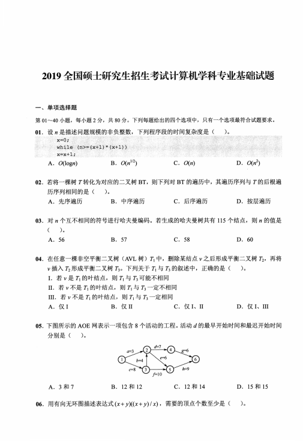
2019全国硕士研究生招生考试计算机学科专业基础试题
一、单项选择题
第01〜4 0 小题，每小题2 分，共8 0分。下列每题给出的四个选项中，只有一个选项最符合试题要求。
0 1 . 设几是描述问题规模的非负整数，下列程序段的时间复杂度是(
)o
x=0;
while (n>=(x+1)* (x+1))
x=x+l;
A. O(log〃)
B. O(nl/2)
C. O(n)
D. O(«2)
02.若将一棵树T 转化为对应的二叉树B T , 则下列对B T 的遍历中，其遍历序列与T 的后根遍
历序列相同的是(
)o
A . 先序遍历
B . 中序遍历
C . 后序遍历
D . 按层遍历
0 3 . 对〃个互不相同的符号进行哈夫曼编码。若生成的哈夫曼树共有115个结点，则〃的值是
(
)o
A. 56
B. 57
C. 58
D. 60
0 4 . 在任意一棵非空平衡二叉树( A V L 树)方中，删除某结点y 之后形成平衡二叉树八，再将
y 插入72形成平衡二叉树73。下列关于与A 的叙述中，正确的是(
)o
L
若y 是Ti的叶结点，则”与网可能不相同
II . 若y 不是看的叶结点，则方与北一定不相同
III . 若y 不是看的叶结点，则Ti与73一定相同
A . 仅 I
B . 仅 n
C . 仅 I、II
D . 仅 I、III
05.下图所示的A O E 网表示一项包含8 个活动的工程。活动d 的最早开始时间和最迟开始时间
分别是(
)0
A. 3 和 7
B. 12 和 12
C. 12 和 14
D. 15 和 15
0 6 . 用有向无环图描述表达式(x + y)((x+ ，)/%)，需要的顶点个数至少是(
)。
查看 / 复制本页文字
2019全国硕士研究生招生考试计算机学科专业基础试题 一、单项选择题 第01〜4 0 小题，每小题2 分，共8 0分。下列每题给出的四个选项中，只有一个选项最符合试题要求。 0 1 . 设几是描述问题规模的非负整数，下列程序段的时间复杂度是( )o x=0; while (n>=(x+1)* (x+1)) x=x+l; A. O(log〃) B. O(nl/2) C. O(n) D. O(«2) 02.若将一棵树T 转化为对应的二叉树B T , 则下列对B T 的遍历中，其遍历序列与T 的后根遍 历序列相同的是( )o A . 先序遍历 B . 中序遍历 C . 后序遍历 D . 按层遍历 0 3 . 对〃个互不相同的符号进行哈夫曼编码。若生成的哈夫曼树共有115个结点，则〃的值是 ( )o A. 56 B. 57 C. 58 D. 60 0 4 . 在任意一棵非空平衡二叉树( A V L 树)方中，删除某结点y 之后形成平衡二叉树八，再将 y 插入72形成平衡二叉树73。下列关于与A 的叙述中，正确的是( )o L 若y 是Ti的叶结点，则”与网可能不相同 II . 若y 不是看的叶结点，则方与北一定不相同 III . 若y 不是看的叶结点，则Ti与73一定相同 A . 仅 I B . 仅 n C . 仅 I、II D . 仅 I、III 05.下图所示的A O E 网表示一项包含8 个活动的工程。活动d 的最早开始时间和最迟开始时间 分别是( )0 A. 3 和 7 B. 12 和 12 C. 12 和 14 D. 15 和 15 0 6 . 用有向无环图描述表达式(x + y)((x+ ，)/%)，需要的顶点个数至少是( )。